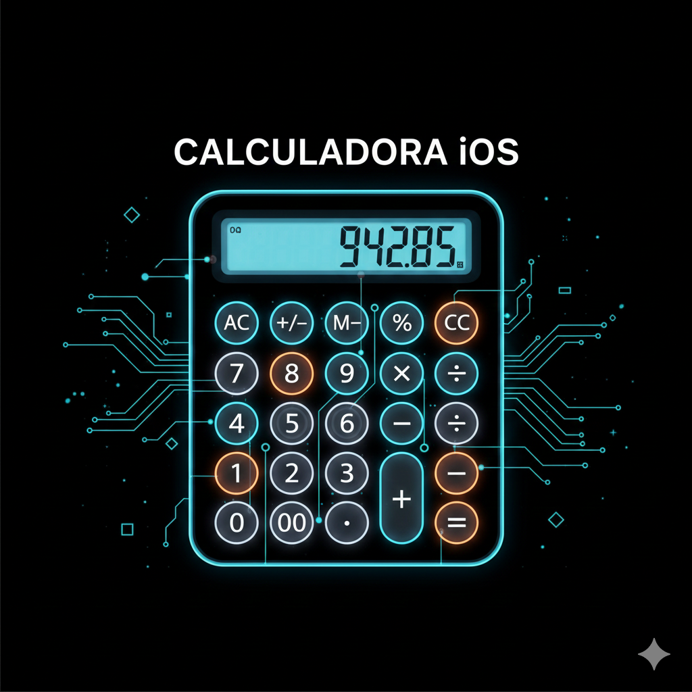
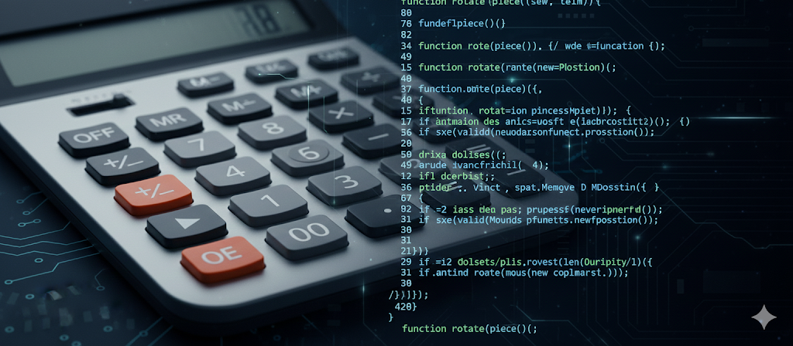

Calculadora iOS
Rèplica exacta del disseny i funcionalitat de la calculadora d'Apple.

Sobre el projecte:
Aquest projecte consisteix en una recreació pixel-perfect de la icònica calculadora de l'iPhone. L'objectiu no era només copiar l'estètica, sinó també replicar la lògica d'usuari, incloent-hi la gestió de decimals, les operacions encadenades i el comportament del botó "AC" (All Clear).
COM ES VA FER:
La maquetació s'ha fet utilitzant **CSS Grid** per aconseguir la disposició perfecta dels botons circulars i que sigui totalment responsive.
La lògica en **JavaScript** gestiona els estats de la calculadora (primer número, operador, segon número) i realitza els càlculs matemàtics, assegurant-se de tractar correctament els errors com la divisió per zero.
